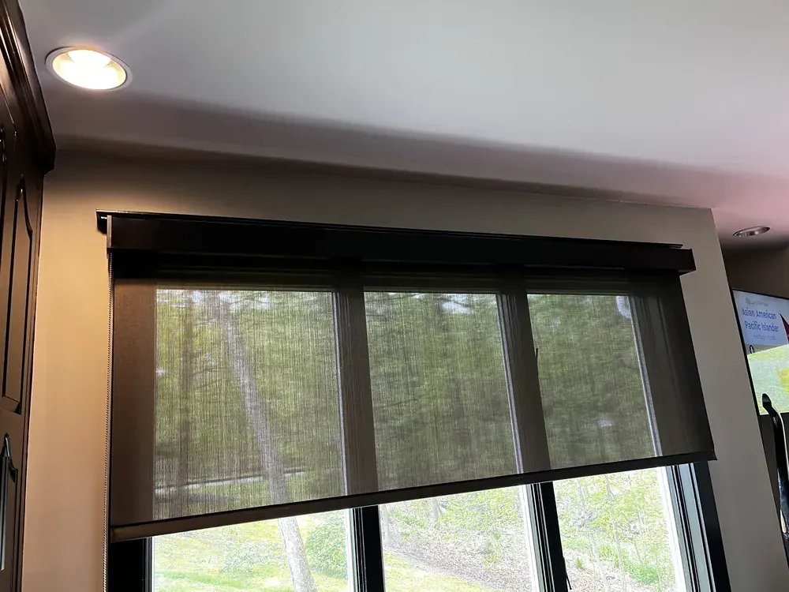
Hunter Douglas · Roller & solar shades
Designer Screen Shades
Our Designer Screen Shades are specially crafted to curb aggressive UV rays, protecting your furniture and valuables. They also minimize light gaps for the utmost privacy.
Science behind the shade
Particularly perfect for patios and sunrooms—but compatible with all light-filled spaces—our Designer Screen Shades maintain your outdoor views while providing UV protection and curbing harsh rays to protect your works of art or fade-prone furniture.
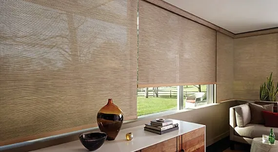
Key features
Special Fabrics
Our new, one-of-a-kind Greenscreen Sea-Tex™ fabrics, exclusive to Hunter Douglas Designer Screen Shades, boast yarn made from reclaimed, washed-ashore plastic.
UV Protection
Protect your furniture, flooring and artwork from fading. Designer Screen fabrics block between 86% and 99% of the sun's damaging rays.
Superior Operation
The Custom Clutch operating system features modern hardware and precision-tuned lift technology that delivers smooth operation, ease of lifting and the smallest light gap in the industry.
Multiple Opacities
Designer Screen fabrics are organized by openness factor. Openness is the weave density of screen fabric affecting the degree of visibility, privacy, glare and UV blockage. There are five options, ranging from most view/least privacy to minimal view/maximum privacy.
Top & Bottom Treatments
Customize these shades with top treatments that conceal the fabric roll for a clean look. A selection of bottom treatments includes fabric-wrapped options.
A few of our favorite fabrics
This is just a sampling of our fabrics. Request a consultation and we bring every fabric and texture to your home, so you can see them in your own light.
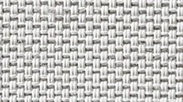
Vienna Sugar Cookie Vna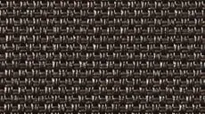
Umbria Basalt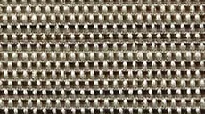
Striae Mercury Stri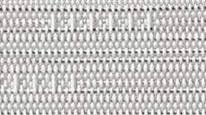
Palette Whitestone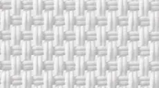
New Orleans Riverboat White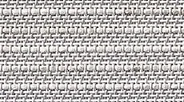
Indian Basket Himalayan Ind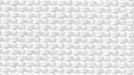
Greenscreen Sea Tex Pristine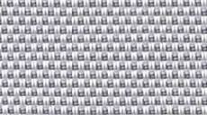
Flourish Rainstorm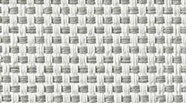
Empire Silver Pearl
More roller & solar shades

Designer Roller Shades
Whether your aesthetic is minimalistic or statement-making, our Designer Roller Shades are a timeless accent.
Explore Designer Roller Shades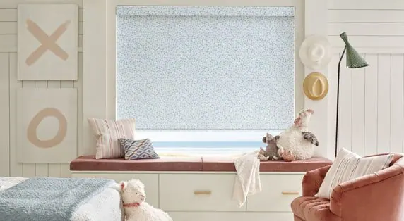
Design Studio™ roller shades
Design Studio™ Roller Shades offer an exclusive fabric collection in opaques and semi-opaques from NY designer Rebecca Atwood.
Explore Design Studio™ roller shades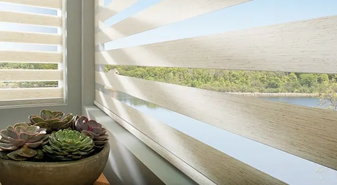
Designer Banded Shades
Designer Banded Shades combine alternating sheer and solid fabric bands in a single shade.
Explore Designer Banded Shades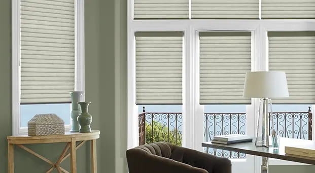
Sonnette™ cellular roller shades
A shining example of simple luxury, our cordless Sonnette™ Cellular Roller Shades operate effortlessly like a traditional roller shade, and create warm, glowing light by…
Explore Sonnette™ cellular roller shades
Questions we hear often
What makes Designer Screen Shades different?
Particularly perfect for patios and sunrooms—but compatible with all light-filled spaces—our Designer Screen Shades maintain your outdoor views while providing UV protection and curbing harsh rays to protect your works of art or fade-prone furniture.
What is Special Fabrics on Designer Screen Shades?
Our new, one-of-a-kind Greenscreen Sea-Tex™ fabrics, exclusive to Hunter Douglas Designer Screen Shades, boast yarn made from reclaimed, washed-ashore plastic.
Can I see Designer Screen Shades samples in my home?
Yes. What you see online is just a sampling. Book a consultation and we bring the full range of fabrics to your home, so you can choose in your own light.
Do you measure and install Designer Screen Shades?
Yes. We take care of measuring and installation. Our experienced installers are fully trained and will ensure a perfect fit for your new Designer Screen Shades, and they show you how everything works before they leave.

Let’s look at your windows together.
A free visit, real samples, and an honest recommendation. No pressure to buy on the spot.